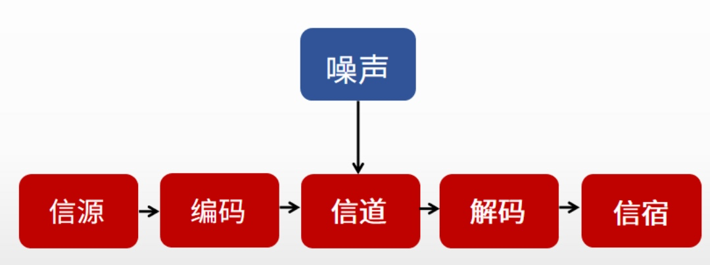
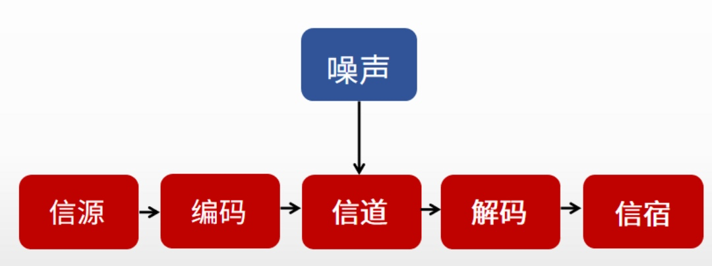
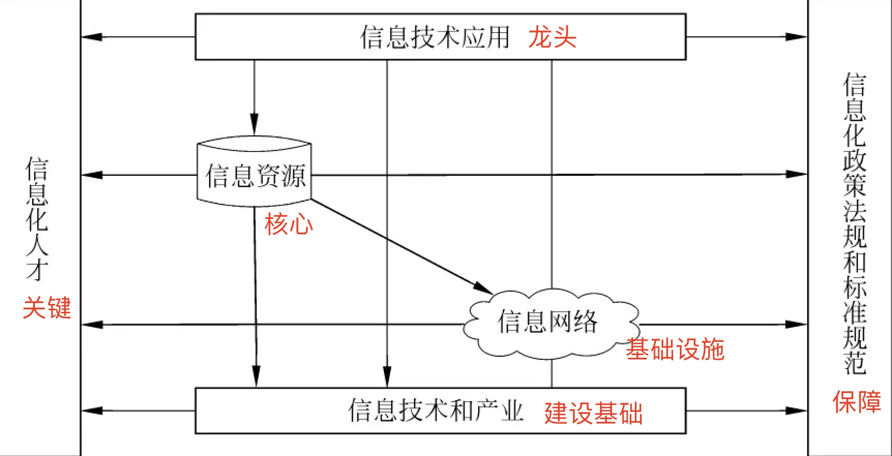

1、信息技术与管理基础
1、信息技术与管理基础
信息的基本概念
1 | 信息论之父：香农 |
信息的特征
1 | * 客观性 |
信息的质量属性 *
1 | 口诀：精完可及经验安 |
信息的传输模型
 

系统的概念
1 | 系统是指由一系列互相联系、相互依赖、互相作用的事物或过程组成的具有整体功能和综合行为的统一体。 |
系统的特性
1 | * 目的性 |
信息系统的特性
1 | * 开放性 |
信息化的五个层次
1 | 速记词：产企业国社 |
信息化的核心
1 | 主体：全体社会成员 |
两网、一站、四库、十二金
1 | 一站：中国政府网 |
信息化体系六要素

1 | 速记词：上鹰下鸡左人右龟 |
信息系统的生命周期-四阶段
1 | 速记词：花开云散 |
更正性维护
1 | 修改bug |
适应性维护
1 | 为使系统适应环境变化而进行的维护工作 |
完善性维护
1 | 扩充原有功能 |
预防性维护
1 | 针对未来的维护 |
信息系统的生命周期-五阶段 *
1 | * 系统规划阶段 |
信息系统开发方法
1 | * 结构化开发方法 |
OSI协议
1 | 速记词：巫术忘传会飚鹰 |
网络存储技术
直接附加存储 DAS
1 | DAS 方式很难扩展，数据处理和传输能力低 |
网络附加存储 NAS
1 | 支持即插即用 |
存储区域网络 SAN
1 | 通过专用交换机将磁盘阵列与服务器连接起来的高速专用子网，价格贵 |
中间件分类
底层型中间件
1 | JVM,CLR,ACE,JDBC,ODBC... |
通用型中间件
1 | J2EE,MOM,COM.CORBA... |
集成型中间件
1 | EAI,WORK FLOW... |
一、压缩工期的方法：1、控制成本的前提下进行赶工；2、控制风险的前提下快速跟进；3、投入更多更优质的资源和指派经验更丰富的人员；4、征得业主同意减小活动范围或降低活动要求；5、通过改进方法和新技术提高生产效率；6、加强质量管理，及时发现问题，减少返工，从而缩短工期。
二、成本失控的原因：1，对工程项目认识不足；2，组织制度不健全；3，方法问题；4，技术制约；5，需求管理不当。
三、冲突管理策略：1、撤退/回避；2、缓和/包容；3、妥协/调解；4、强迫/命令；5、合作/解决问题。
四、冲突的特点速记：自团公问现。1、冲突是自然的，要找出一个解决办法；2、冲突是一个团队问题，不是某个人的问题；3、应公开处理冲突；4、冲突的解决聚焦问题而不是人身gong击；5、冲突的解决聚焦在现在而不是过去。
五、规划风险应对：1、回避：去掉有风险的工作包；2、转移：购买保险或第三方担保；3、减轻：雇佣经验丰富员工，更多测试，增加冗余；4、开拓：分配Zui好的资源和人，Zui大经费保障，Zui优政策，一把手带队；5、分享：合资公司，股份制；6：提高：为尽早完成活动而增加资源；7：接受：准备应急计划，建立应急储备。
六、变更控制流程速记：提初论审，时间评判。1、提出与接受变更申请；2、对变更的初审；3、变更方案论证；4、项目管理委员会审查；5、发出变更通知并组织实施；6、变更实施的监控；7、变更效果的评估；8、判断发生变更后的项目是否已纳入正常轨道。
七、质量管理七种工具：1、寻找原因用因果图鱼骨图石川图；2、未来结果预测、预测偏差用趋势图；3、引起少数问题Zui大原因用排列图，也叫帕累托图、80/20法则、二八法则；4、项目是否稳定、是否在可控制范围内、项目整体情况用控制图；5、过程变量的分布形状和宽度来确定过程中出现的问题用直方图；6、两个变量间是否可能存在关系用散点图。
八、项目章程速记：目测要描风，进预审派发。1、项目目的或批准项目的原因；2、项目目标或成功标准；3、总体要求；4、概括性项目描述；5、主要风险；6、里程碑进度计划；7、总体预算；8、审批要求；9、任命项目经理及其权责；10、发起人和其他批准项目章程人员姓名职权。
九、ISO9000质量管理8项原则速记：客户领全锅，管理改事例。1、以客户为中心；2、领导作用；3、全员参与；4、过程方法；5、管理的系统方法；6、持续改进；7、基于事实的决策方法；8、与供方互利关系。
十、质量成本有两种：1、一致性成本：预防（如培训）成本、评价（如测试、检查）成本，用来预防项目失败的费用；2、非一致性成本：内部（项目组主动发现问题并弥补发生的成本）和外部（已经客户或社会造成的损失，如返工）失败成本，是用来处理失败的费用。
十一、团队组建的工具：1、预分派；2、谈判；3、招募；4、虚拟团队；5、多标准决策分析。团队建设的工具：1、人际关系技能；2、培训；3、团队建设活动；4、基本规则；5、集中办公；6、认可与奖励。加强员工交流机会：1、办公环境改造；2、组织结构扁平化；3、设置虚拟网络社区。
十二、范围说明书速记：产验可除制假。1、产品的范围描述；2、验收标准；3、可交付成果；4、项目的主要责任；5、制约因素；6、假设条件。
十一、项目经理应具备的能力：1，行业知识和专业技术知识；2，全面的项目管理知识和丰富的项目管理经验和能力；3，良好的沟通技能和解决冲突的能力；4，团队建设能力，鼓舞激励团队成员的技能；5，良好的道德素质，健康的身体素质；6，系统的思维能力，积极的创新能力。
以上论文中都可以用到。